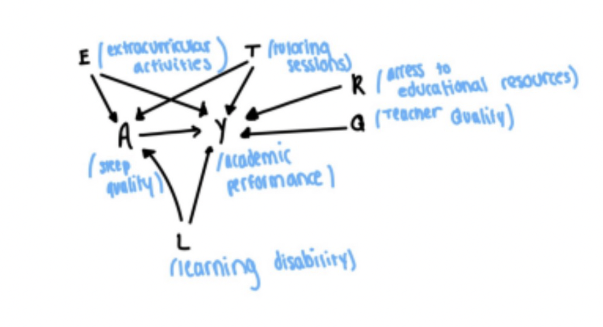
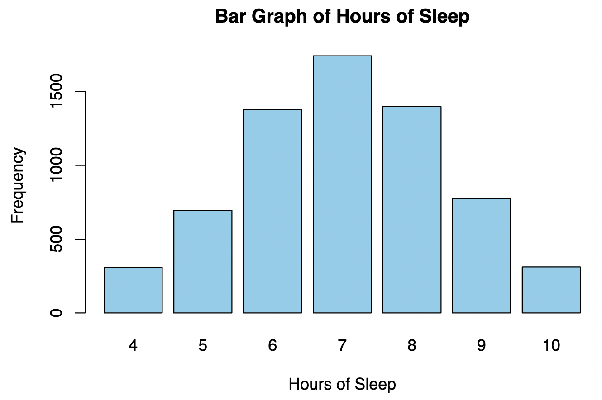
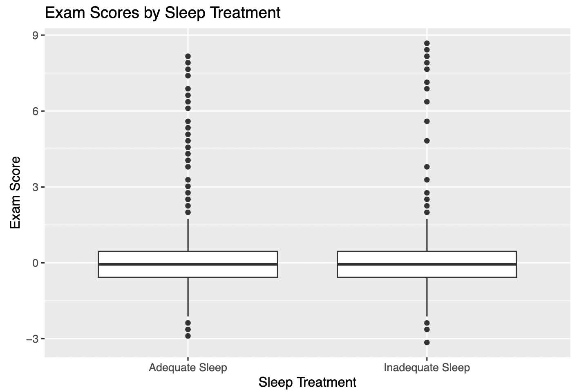
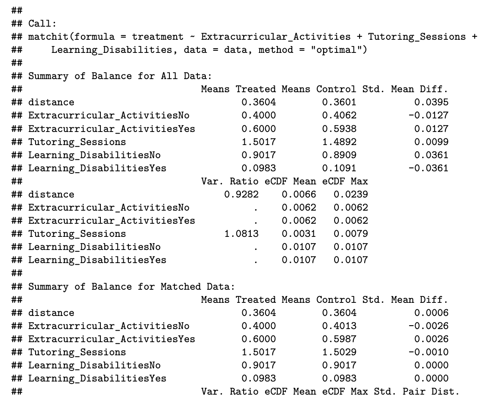
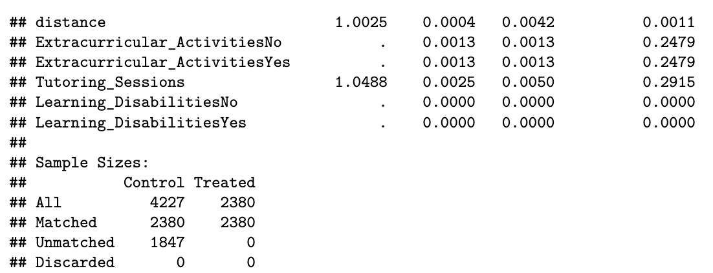

Project Overview
This project explored the causal relationship between sleep duration and exam performance. Using a Kaggle dataset containing features related to student performance, we examined whether sleeping more than six hours per night (defined as "adequate sleep") impacts exam scores.
Process
The project involved several steps:
- Research Design: Drafted the causal question and identified relevant variables using a Directed Acyclic Graph (DAG).
- Data Cleaning: Processed the dataset to handle missing values, standardize variables, and dichotomize sleep hours into adequate vs. inadequate.
- Analysis: Used Propensity Score Matching to estimate the Average Treatment Effect on the Treated (ATT).
- Results: Found that adequate sleep is associated with a negligible decrease in exam scores, suggesting no significant effect.
Key Findings
- The estimated ATT is -0.0374, meaning students with adequate sleep scored 0.0374 standard deviations lower than those with inadequate sleep.
- The small effect size suggests sleep duration may not significantly impact exam performance.
- Results emphasize the importance of considering other factors like sleep quality, stress, and socioeconomic status.
Personal Contribution
I independently drafted the causal question, sourced the dataset, conducted the analysis, and wrote the results section, including the R code used for matching and estimating ATT.
Skills Demonstrated
- Statistical causal inference using Propensity Score Matching.
- Data cleaning and visualization in R.
- Proficiency in RStudio for statistical analysis.
Key Visualizations





View Full Report
The full project report is available for download: Download Report.